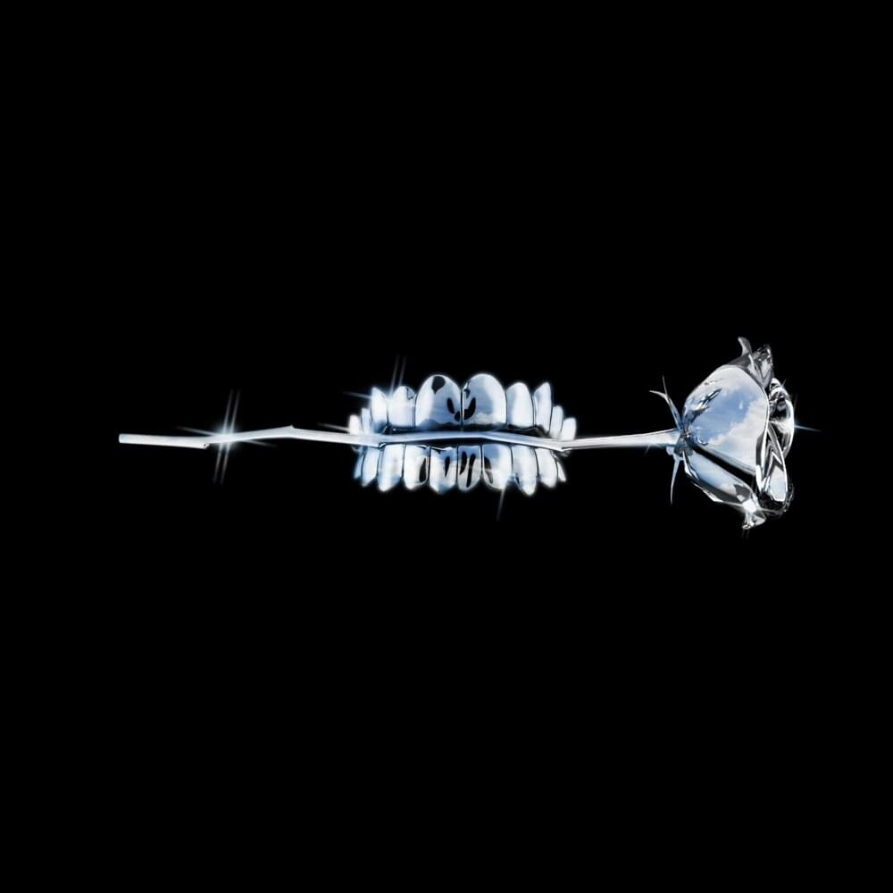

|  |
‘LOVE’ Romantic and delicate, new single ‘LOVE’ illustrates the distance in love: referring, with a sweet melancholy, to the symbolic distance of detachment as well as the physical aspect of absence. |
|
‘I’ French pianist Sofiane Pamart brings his majestic sounds to COLORS with a riveting performance of ‘I’ from his forthcoming studio album, ‘LETTER’. |